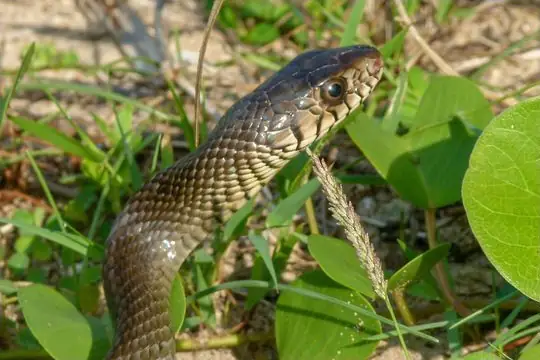
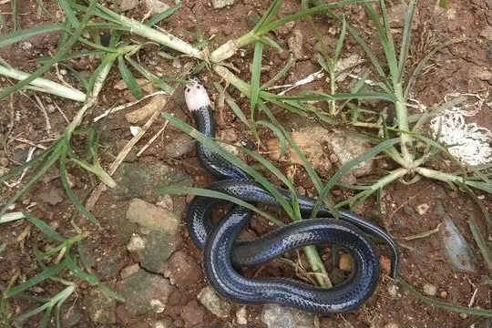
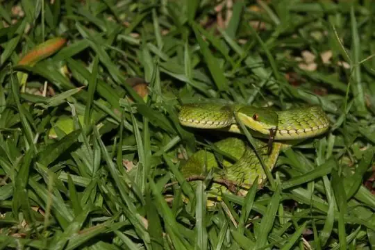
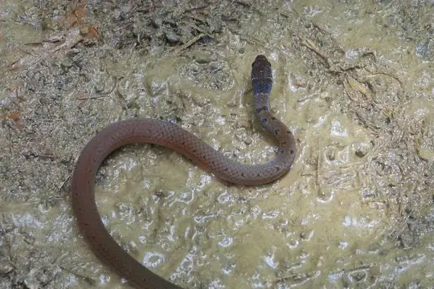
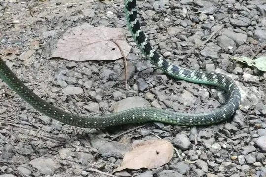
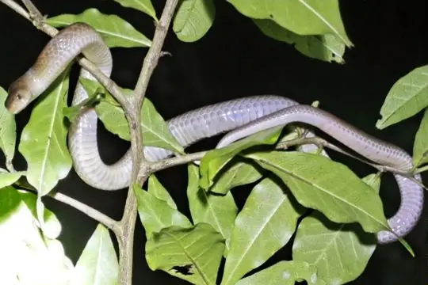

Snakes of Ratchaburi
A state or province of Thailand
7 snake species are recorded in Ratchaburi, a state or province of Thailand, in SnakeList: 1 venomous and 6 non-venomous, from 3 families.
- 7species
- 1venomous
- 6non-venomous
- 3families
SnakeList records where snakes live by country and by state or province, not by exact spot, so a species listed here may live in only part of Ratchaburi. All snakes of Thailand.
Most widely recorded
The species here that have research-grade iNaturalist records in the most places across their whole range - not just in Ratchaburi. That shows how often people have photographed them, not how many live here.

Oriental RatsnakePtyas mucosa Indo-Chinese Rat SnakePtyas korros
Indo-Chinese Rat SnakePtyas korros
Sunbeam SnakeXenopeltis unicolor
White-lipped PitviperTrimeresurus albolabris
Common RingneckGongylosoma scriptum
Sawtooth-necked BronzebackDendrelaphis nigroserratus
Hua Hin Kukri SnakeOligodon huahin
Snake families
Venomous and non-venomous
Venomous: 1Non-venomous: 6
1 is listed by SnakeList as dangerous to people: White-lipped Pitviper Trimeresurus albolabris.
Habitats (rough estimate)
How many of its living snakes have each kind of habitat in SnakeList’s estimate. That estimate comes from every country, state and province where each snake is recorded - not from a survey of Ratchaburi, and not checked species by species.
Who described them
The scientists who first described its most widely recorded snakes, and when.
- Oriental Ratsnake Ptyas mucosa -
- Indo-Chinese Rat Snake Ptyas korros -
- Sunbeam Snake Xenopeltis unicolor -
- White-lipped Pitviper Trimeresurus albolabris -
- Common Ringneck Gongylosoma scriptum -
- Sawtooth-necked Bronzeback Dendrelaphis nigroserratus -
- Hua Hin Kukri Snake Oligodon huahin -
Names and dates come from SnakeList’s reviewed species accounts; the others are looked up on Wikidata (CC0) when this page opens.
Neighbouring states and provinces
Places in SnakeList that share a border with Ratchaburi.
- Kanchanaburi 22 species
- Nakhon Pathom 7 species
- Phetchaburi 41 species
- Samut Sakhon 5 species
- Samut Songkhram 2 species
- Tanintharyi (Myanmar) 5 species
All 7 species
- Common Ringneck Gongylosoma scriptum
- Hua Hin Kukri Snake Oligodon huahin
- Indo-Chinese Rat Snake Ptyas korros
- Oriental Ratsnake Ptyas mucosa
- Sawtooth-necked Bronzeback Dendrelaphis nigroserratus
- Sunbeam Snake Xenopeltis unicolor
- White-lipped Pitviper Trimeresurus albolabris venomous
No snake here matches that.